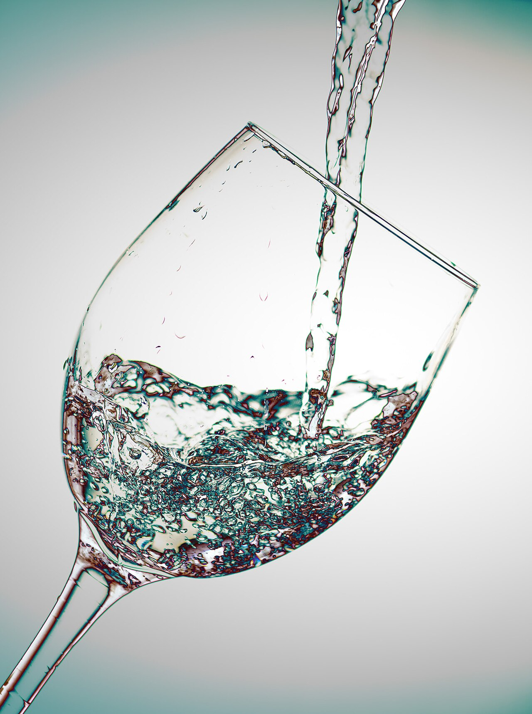
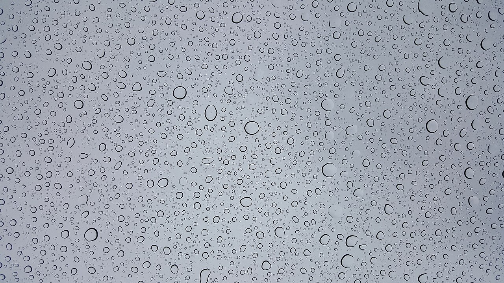
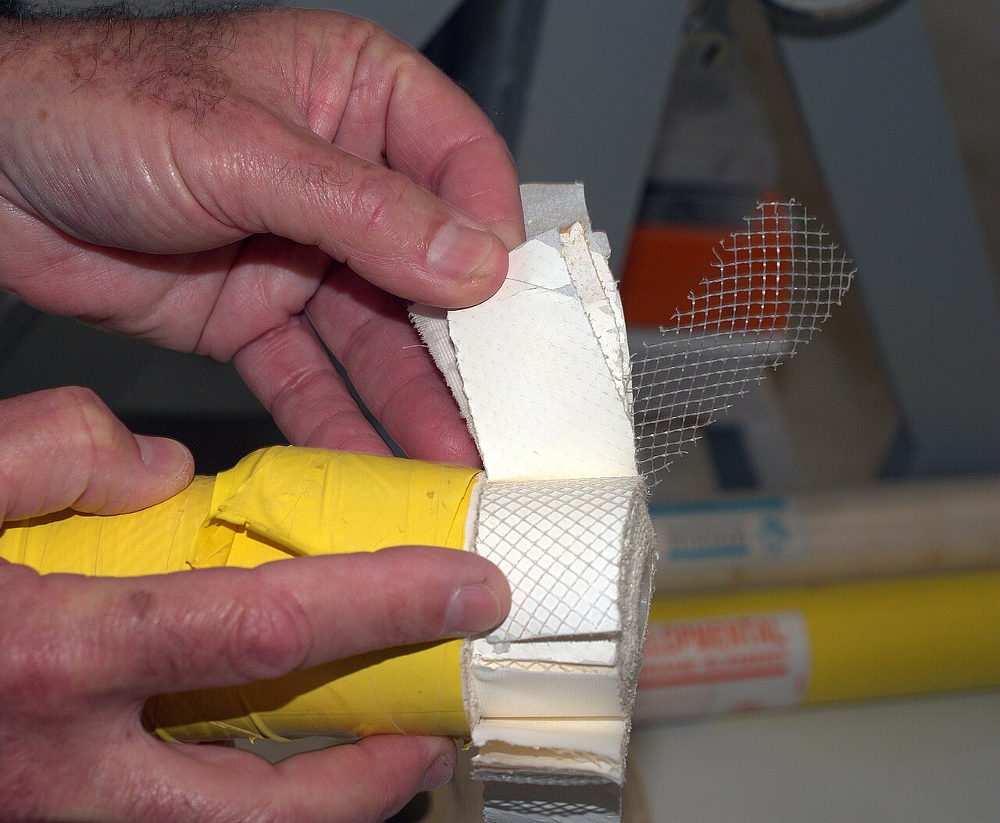

Residential
Point-of-use purifiers and under-sink RO systems for apartments and villas.
Whether safeguarding household drinking water, supplying consistent commercial RO volume, or conditioning heavy industrial process streams, AquaPure configures treatment solutions around real feed-water conditions.

Municipal and groundwater supplies often carry varying levels of sediment, chlorine taste, hardness minerals, and dissolved solids. AquaPure's domestic water purifiers and under-sink RO systems pair multi-stage filtration with compact point-of-use convenience.
Every residential recommendation considers your incoming water profile, kitchen layout, and routine cartridge maintenance so families enjoy reliable daily drinking and cooking water.

Offices, restaurants, cafés, clinics, and educational campuses rely on dependable water quality for beverages, food preparation, and daily staff hydration without frequent bottlenecks.
AquaPure commercial RO systems are configured according to peak daily demand, kitchen or utility footprint, and raw water composition—ensuring clean equipment protection and straightforward servicing.
Selected around peak hourly draw and storage tank capacity.
Service schedules structured around operating hours and feed TDS.
Industrial water treatment cannot be pulled off a generic catalog shelf. System selection depends directly on your water source, chemical profile, target throughput capacity, recovery expectations, and plant operating hours.
AquaPure coordinates pre-filtration vessels, antiscalant dosing, membrane housings, post-treatment conditioning, and instrumentation into a cohesive skid built for dependable plant integration.

Clean, conditioned water engineered for distinct residential, institutional, and industrial operational standards.
Point-of-use purifiers and under-sink RO systems for apartments and villas.
Consistent drinking and utility water systems for offices and retail centers.

Softened and purified water for hotels, commercial kitchens, and guest services.

Reliable multi-stage treatment supporting clinics and patient care facilities.

Safe campus hydration systems designed for schools and universities.

Process feed conditioning, cooling makeup, and industrial RO capacity.

Ingredient water polishing, carbon filtration, and dissolved solids control.
Custom treatment configurations scoped around unique site conditions.
Speak with our engineering team to review your feed water characteristics and obtain a tailored treatment recommendation.